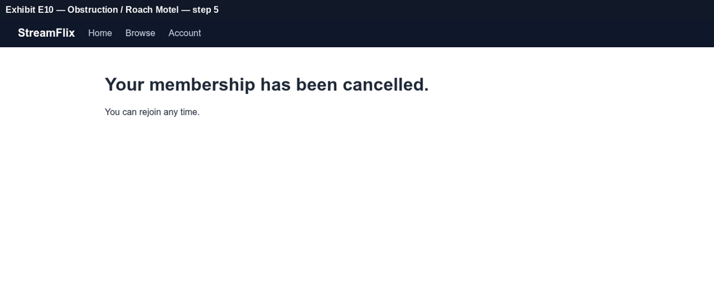
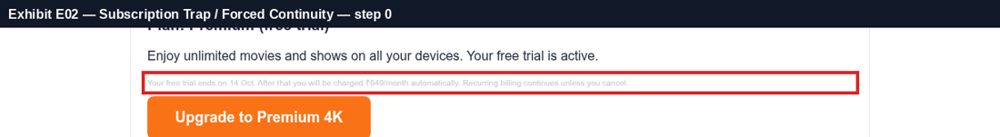
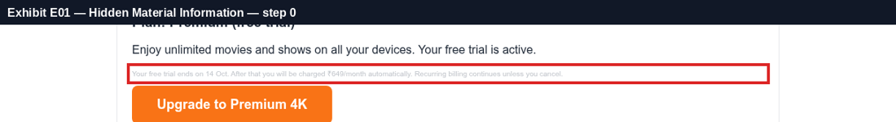
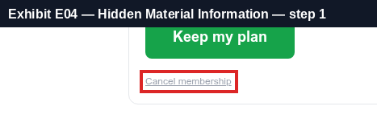
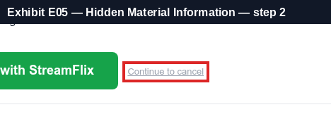
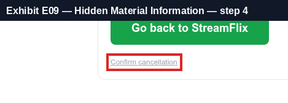
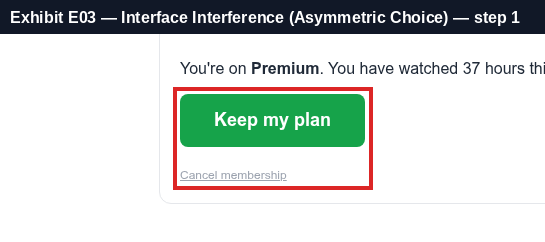
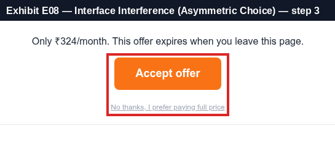
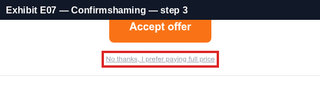
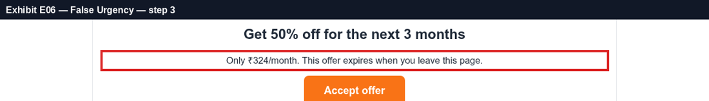

Manipulation score 86/100 · Grade F · 10 exhibits
Testimony — simulated user journeys
Cancel subscription — ✅ reached in 5 clicks
Making cancellation, rejection or unsubscribing much harder than signing up.
Exhibit E10 step 5 · source: path · 97%
"Cancel subscription" takes 5 steps through 2 retention screen(s).
- Step 1: clicked "Manage membership" → "Membership — StreamFlix" (control was below the fold at y=1332px — user had to scroll)
- Step 2: clicked "Cancel membership" → "Tell us why — StreamFlix"
- Step 3: clicked "Continue to cancel" → "Special offer just for you — StreamFlix" [retention / guilt screen]
- Step 4: clicked "No thanks, I prefer paying full price" → "Are you sure? — StreamFlix" [retention / guilt screen]
- Step 5: clicked "Confirm cancellation" → "Cancelled — StreamFlix"
- 5 clicks needed vs. a fair baseline of 2; 2 retention screen(s) on the way.

Legal & regulatory basis
FTC Negative Option ('Click-to-Cancel') Rule, 2024 (vacated by the U.S. 8th Circuit, July 2025)
The FTC's 2024 amended Negative Option Rule would have required that cancelling be as easy as signing up and limited forced save attempts. A federal appeals court vacated the rule on procedural grounds in July 2025, but ROSCA and Section 5 still apply, and the FTC continues to bring cases against hard-to-cancel subscriptions (for example its 2025 settlement with Amazon over Prime enrolment and cancellation).
https://www.ftc.gov/legal-library/browse/rules/negative-option-rule
Restore Online Shoppers' Confidence Act (ROSCA), 15 U.S.C. §§ 8401–8405
ROSCA prohibits charging consumers for goods or services sold online through a negative option feature unless the seller (1) clearly and conspicuously discloses all material terms before obtaining billing information, (2) obtains the consumer's express informed consent before charging, and (3) provides simple mechanisms for the consumer to stop recurring charges.
https://www.ftc.gov/legal-library/browse/statutes/restore-online-shoppers-confidence-act
FTC v. Epic Games (2022–2023)
In the Epic Games (Fortnite) matter the FTC alleged that counter-intuitive, inconsistent button configurations caused players to make unwanted purchases with a single button press, and that refunds were made hard to obtain. Epic agreed to pay $245 million in refunds — an example of design-based unauthorized charges.
https://www.ftc.gov/legal-library/browse/cases-proceedings/192-3203-epic-games-inc-matter
Converting a free trial into a paid, auto-renewing plan without clear, conspicuous disclosure.
Exhibit E02 step 0 · source: dom · 90%
Free trial converts to a paid recurring plan and the renewal terms are hidden.
- Offer: "Plan: Premium (free trial)"
- Renewal disclosure only in fine print: "Your free trial ends on 14 Oct. After that you will be charged ₹649/month automatically. Recurring billing continues unless you cancel." (10px)

Legal & regulatory basis
FTC Negative Option ('Click-to-Cancel') Rule, 2024 (vacated by the U.S. 8th Circuit, July 2025)
The FTC's 2024 amended Negative Option Rule would have required that cancelling be as easy as signing up and limited forced save attempts. A federal appeals court vacated the rule on procedural grounds in July 2025, but ROSCA and Section 5 still apply, and the FTC continues to bring cases against hard-to-cancel subscriptions (for example its 2025 settlement with Amazon over Prime enrolment and cancellation).
https://www.ftc.gov/legal-library/browse/rules/negative-option-rule
Restore Online Shoppers' Confidence Act (ROSCA), 15 U.S.C. §§ 8401–8405
ROSCA prohibits charging consumers for goods or services sold online through a negative option feature unless the seller (1) clearly and conspicuously discloses all material terms before obtaining billing information, (2) obtains the consumer's express informed consent before charging, and (3) provides simple mechanisms for the consumer to stop recurring charges.
https://www.ftc.gov/legal-library/browse/statutes/restore-online-shoppers-confidence-act
FTC Enforcement Policy Statement Regarding Negative Option Marketing (Oct 2021)
The FTC's policy statement says negative option sellers should disclose material terms clearly and conspicuously, obtain unambiguous affirmative consent, and provide cancellation mechanisms that are at least as easy to use as the method used to sign up. Cancellation should not require the consumer to navigate obstacles such as repeated save attempts.
https://www.ftc.gov/legal-library/browse/federal-register-notices/enforcement-policy-statement-regarding-negative-option-marketing
Placing material terms (renewal, fees, cancellation) in tiny or low-contrast text.
Exhibit E01 step 0 · source: dom · 90%
Material terms are displayed in fine print / low-contrast text.
- Material term: "Your free trial ends on 14 Oct. After that you will be charged ₹649/month automatically. Recurring billing continues unless you cancel."
- Font size 10px, contrast 1.75:1

Exhibit E04 step 1 · source: dom · 75%
The cancellation / material control is rendered in small, low-contrast text.
- Exit / material control: "Cancel membership"
- Font size 12px, contrast 2.54:1

Exhibit E05 step 2 · source: dom · 75%
The cancellation / material control is rendered in small, low-contrast text.
- Exit / material control: "Continue to cancel"
- Font size 13px, contrast 2.54:1

Exhibit E09 step 4 · source: dom · 75%
The cancellation / material control is rendered in small, low-contrast text.
- Exit / material control: "Confirm cancellation"
- Font size 12px, contrast 2.54:1

Legal & regulatory basis
FTC Staff Report — Bringing Dark Patterns to Light (2022), Hide or delay material information
Design elements that hide or delay disclosure of material information include drip pricing, where mandatory fees are revealed only after the consumer has started the purchase process, and burying key terms in fine print, behind hyperlinks or in low-contrast text. Material information must be disclosed clearly and conspicuously, before the consumer commits.
https://www.ftc.gov/reports/bringing-dark-patterns-light
W3C WCAG 2.2 — Success Criterion 1.4.3 Contrast (Minimum)
Text should have a contrast ratio of at least 4.5:1 against its background (3:1 for large text). Used here as an objective, measurable yardstick for whether a disclosure or alternative option is 'clear and conspicuous'.
https://www.w3.org/TR/WCAG22/#contrast-minimum
FTC Act, Section 5 (15 U.S.C. § 45)
Section 5 of the FTC Act declares unlawful unfair or deceptive acts or practices in or affecting commerce. A practice is deceptive if a representation, omission or practice is likely to mislead a consumer acting reasonably and is material. The net impression of an interface, not only its literal text, is evaluated.
https://www.ftc.gov/legal-library/browse/statutes/federal-trade-commission-act
Making the option that benefits the business visually dominant while the alternative is hidden or de-emphasised.
Exhibit E03 step 1 · source: dom · 97%
The option that benefits the business is visually dominant; the alternative is de-emphasised.
- Preferred option "Keep my plan": 185×53px, contrast 3.3:1, filled button
- Alternative "Cancel membership": 107×14px, contrast 2.54:1, text link, font 12px
- Visual prominence ratio ≈ 38.1×
- Alternative fails WCAG AA text contrast (4.5:1) with 2.54:1.

Exhibit E08 step 3 · source: dom · 97%
The option that benefits the business is visually dominant; the alternative is de-emphasised.
- Preferred option "Accept offer": 173×53px, contrast 2.8:1, filled button
- Alternative "No thanks, I prefer paying full price": 185×14px, contrast 2.54:1, text link, font 12px
- Visual prominence ratio ≈ 17.9×
- Alternative fails WCAG AA text contrast (4.5:1) with 2.54:1.

Legal & regulatory basis
FTC Staff Report — Bringing Dark Patterns to Light (2022), Obscure or subvert privacy choices
Design elements that subvert privacy choices include defaulting users into data sharing, making the privacy-protective option harder to find or less visually prominent than the option that shares more data ('accept all' bright, 'reject' hidden), confusing toggles and double-negative wording, and requiring repeated steps to decline. Choices should be presented neutrally and symmetrically.
https://www.ftc.gov/reports/bringing-dark-patterns-light
California CCPA Regulations, 11 CCR § 7004 (symmetry in choice)
Methods for submitting privacy requests and obtaining consent must use easy-to-understand language and symmetry in choice: the path to a more privacy-protective option shall not be longer or more difficult than the path to a less protective option. Confirmshaming and pre-selected options are cited as non-compliant; agreement obtained through dark patterns is not consent.
https://cppa.ca.gov/regulations/
EU Digital Services Act, Article 25 (online interface design)
Providers of online platforms shall not design, organise or operate their interfaces in a way that deceives or manipulates recipients or otherwise materially distorts or impairs their ability to make free and informed decisions — for example giving more prominence to certain choices, repeatedly requesting a choice already made, or making cancellation more difficult than subscribing.
https://eur-lex.europa.eu/eli/reg/2022/2065/oj
Wording the decline option to guilt or shame the user into accepting.
Exhibit E07 step 3 · source: dom · 85%
Decline option is worded to shame the user.
- Decline control reads: "No thanks, I prefer paying full price"

Legal & regulatory basis
India — CCPA Dark Patterns Guidelines 2023, Annexure 1 (paraphrased)
False urgency: falsely stating or implying urgency or scarcity to induce an immediate purchase. Basket sneaking: adding items, donations or charges at checkout without the user's consent. Confirm shaming: using phrases, video or audio to create fear, shame or guilt to nudge the user. Subscription trap: making cancellation impossible or complex, hiding the cancel option, or forcing payment details for a free trial. Interface interference: highlighting certain information and obscuring other relevant information to misdirect the user. Drip pricing: not revealing price elements upfront or revealing them surreptitiously. Nagging: repeated requests and interactions. Trick question: confusing or vague language to misguide the user.
https://consumeraffairs.nic.in/
California CCPA Regulations, 11 CCR § 7004 (symmetry in choice)
Methods for submitting privacy requests and obtaining consent must use easy-to-understand language and symmetry in choice: the path to a more privacy-protective option shall not be longer or more difficult than the path to a less protective option. Confirmshaming and pre-selected options are cited as non-compliant; agreement obtained through dark patterns is not consent.
https://cppa.ca.gov/regulations/
FTC Staff Report — Bringing Dark Patterns to Light (2022), Obscure or subvert privacy choices
Design elements that subvert privacy choices include defaulting users into data sharing, making the privacy-protective option harder to find or less visually prominent than the option that shares more data ('accept all' bright, 'reject' hidden), confusing toggles and double-negative wording, and requiring repeated steps to decline. Choices should be presented neutrally and symmetrically.
https://www.ftc.gov/reports/bringing-dark-patterns-light
Fabricating time pressure (countdown timers / limited-time claims) to rush the user.
Exhibit E06 step 3 · source: dom · 55%
Time-pressure messaging found.
- Urgency claim: "Only ₹324/month. This offer expires when you leave this page."

Legal & regulatory basis
FTC Staff Report — Bringing Dark Patterns to Light (2022), Induce false beliefs
Examples of design elements that induce false beliefs include false claims of scarcity (low stock messages), false claims of urgency such as countdown timers that reset or that are unrelated to any real deadline, fake activity messages and fabricated social proof such as fake reviews or 'X people are viewing this' notices. The FTC Act prohibits such deceptive claims.
https://www.ftc.gov/reports/bringing-dark-patterns-light
EU Unfair Commercial Practices Directive 2005/29/EC, Annex I point 7
Falsely stating that a product will only be available for a very limited time, or only on particular terms for a very limited time, in order to elicit an immediate decision and deprive consumers of time to make an informed choice, is a commercial practice considered unfair in all circumstances.
https://eur-lex.europa.eu/eli/dir/2005/29/oj
India — CCPA Dark Patterns Guidelines 2023, Annexure 1 (paraphrased)
False urgency: falsely stating or implying urgency or scarcity to induce an immediate purchase. Basket sneaking: adding items, donations or charges at checkout without the user's consent. Confirm shaming: using phrases, video or audio to create fear, shame or guilt to nudge the user. Subscription trap: making cancellation impossible or complex, hiding the cancel option, or forcing payment details for a free trial. Interface interference: highlighting certain information and obscuring other relevant information to misdirect the user. Drip pricing: not revealing price elements upfront or revealing them surreptitiously. Nagging: repeated requests and interactions. Trick question: confusing or vague language to misguide the user.
https://consumeraffairs.nic.in/
Generated by DarkPattern Court. Automated findings are evidence for expert review, not legal advice.